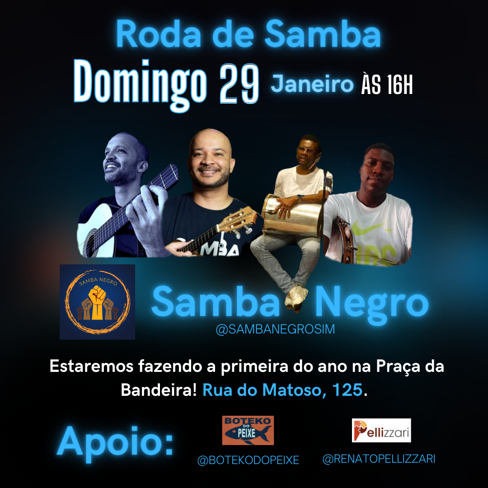

O Samba Negro surgiu da vontade do idealizador Roni 88 em formar um grupo que pudesse homenagear os grandes mestres do Samba! O Objetivo é resgatar as pérolas do Samba e além de interpretar as obras mais conhecidas, buscar muitas do lado B para que possam ser mais conhecidas! O grupo é formado por Roni (Cavaco), Juliano (Violão), Zé Carlos (Tantan) e Vinicius (Pandeiro). O grupo se apresenta mensalmente, todo segundo domingo do mês no Boteko do Peixe - Rua do Matoso, 125 - Praça da Bandeira.